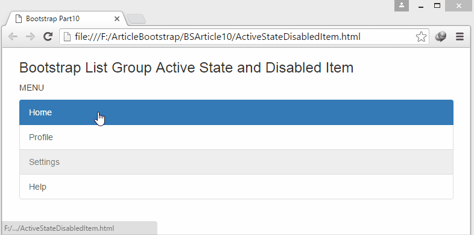

Typical Appearance
The list from an interaction design perspective has a very literal appearance, normally with a light colored background, and thin black bordered rows. Most lists tend to be navigable, with the title of the list, and an option to add more entries. Lists can be found in various applications that involve displaying a "list" or set of data. This data can be shown in an alphabetical order such as a list of contacts or unordered like a list of groceries.
Typical Behavior
Able to view or display a certain amount of elements at a time. Add or delete entries from anywhere on the list. List normally have a title associated to describe the purpose of the list. List can describe procedures in an ordered fashion or display data with bullet points in an unordered fashion.
Events
Adding or deleting an element to a list is an example of a event.
Users can specify if they wish the list to be ordered or unordered. The
user may wish to sort their list using user-defined conditions. A element
of a list can be highlighted or disabled. A
tag can be added to element of a list to display modifications
or activity.
Highlighted List State:
Often times, an element on a list may be highlighted to show the user that the element is currently selected or active.
Disabled List State:
Tag List State:
- 14 Cras justo odio
- 2 Dapibus ac facilisis in
- 1 Morbi leo risus
Component in Action

Variants
Lists are a very basic way to group together items that have some overarching similarity. The simplicity is the lists strength as well as its weakness. Many other interface elements have become variants to lists because they offer more versatility in their design. Some of these variants are listed below:
Vertical Navigation Menu
List Table Variant
| Firstname | Lastname | Age |
|---|---|---|
| Kevin | Hamilton | 20 |
| Rony | Aguilar | 21 |
| Chuck | Norris | 76 |
Priority Metrics
Talk about the five usability metrics in relation to this component. Not all components will have the same metric priorities. For example:
Practically every user interface uses lists whether its to organize data or to display further actions a user can take. When considering priority metrics with lists, its important to distinguish the variants that lists have an how those variant may have different priorities in terms of functionality.
In the previous section, it was shown how a list may take up a menu functionality. In this case it would be important for the user to recognize that the menu or list is interactable. Therefore learnablility and memorability become a critical factor. The list becomes a navigable element, thus it should have a label or title relevant to where it directs a user if he or she interacts with it. The list would not be effective if it created many errors where a user mistakenly interpreted its elements.
However, with other variants, the list consists of different priorities. If a list is implemented to display a table of data which in this case is now non-interactive; learnability, memorability, and errors are no longer as significant. For this list, its sole purpose is to display data in an organizable fashion.
Perhaps the lowest priorities for a list would be satisfaction and efficiency. The lists serves a utilitarian component that has no value of enjoyment for the user but to simply display its elements. There is no reason for a user to become "efficient" with using a list since it has very low complexity.
Key Characteristics
What makes for a good List? Here are some acceptable layouts and behaviors.The consensus between both Google and Microsoft is that a proper list is a single column, made up of rows whos primary function is to hold text. Specifically, Microsoft says, lists are for "Displaying content collections that are primarily text". This is not to say lists cannot hold other data types, however there are better choices if the primary data type is other than text. (i.e. grids are better for images)
For example, here is an acceptable usage of lists with heterogeneous data types:
Note that each row primarily houses text.
Furthermore, it is well understood that lists only scroll vertically, read top to bottom, and are single column. Without these features, a list is hopelessly inadequate. Therefore, some good implementations of lists would be for messaging, settings, contacts or, surprisingly, any set of textual data that intuitively fits into a list.
Keeping consistency in mind between each row is incredibly important. Guidelines by Apple, Microsoft, and Google, all indicate that the text's font between each row should be the same. Each cell should display the content in a uniform way, the picture above again serves as a good example. Notice how each contact image is lined up with the previous row, and the font is all the same.